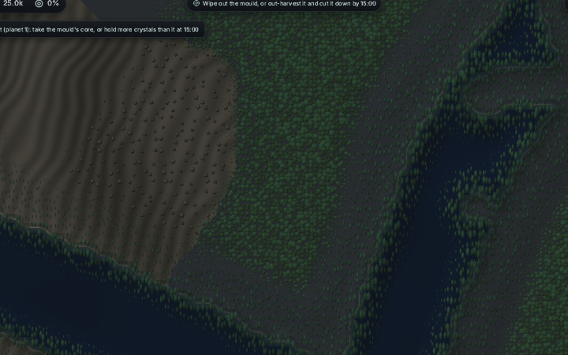
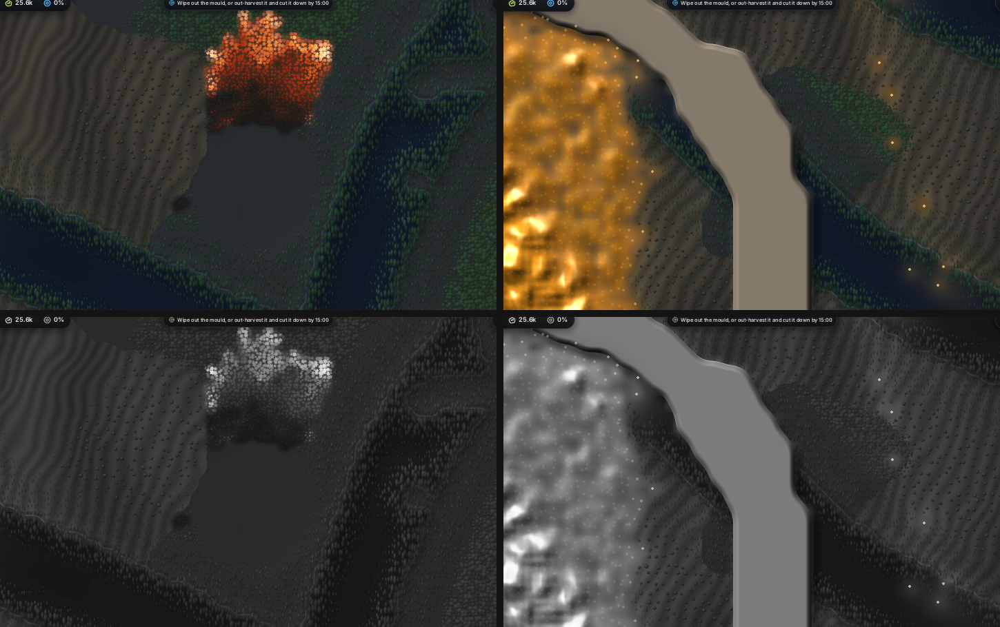
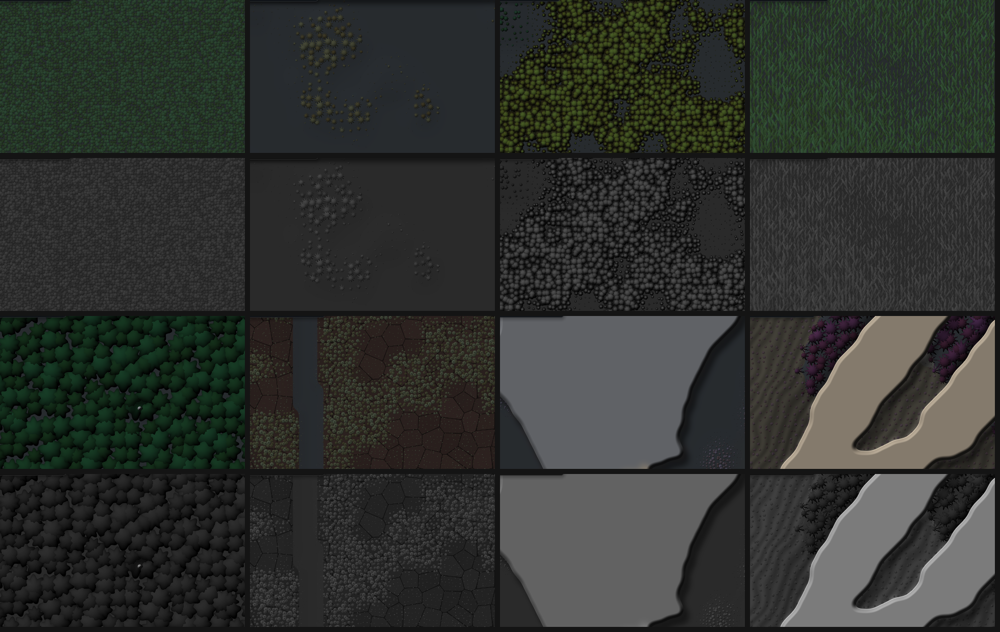

<title>Fire Light, Plants Under</title>
<meta name="claude:viewport-fit-sides" content="cover">
<link rel="stylesheet" href="https://fonts.googleapis.com/css2?family=Inter:wght@400;600&family=Space+Grotesk:wght@500;700&display=swap">
<style>
:root {
  --bg: #f3f4f1; --fg: #1d221d; --muted: #5b645a; --line: #d5dad2; --accent: #c2501a; --leaf: #2f5a3a;
  --display: "Space Grotesk", "Segoe UI", system-ui, sans-serif;
  --body: "Inter", "Segoe UI", system-ui, sans-serif;
}
@media (prefers-color-scheme: dark) { :root:not([data-theme="light"]) { --bg: #121512; --fg: #e4e8e2; --muted: #9aa597; --line: #2b322b; --accent: #f08a50; --leaf: #8fc09a; color-scheme: dark } }
:root[data-theme="dark"] { --bg: #121512; --fg: #e4e8e2; --muted: #9aa597; --line: #2b322b; --accent: #f08a50; --leaf: #8fc09a; color-scheme: dark }
body { background: var(--bg); color: var(--fg); font-family: var(--body); line-height: 1.55; margin: 0; }
main { max-width: 760px; margin: 0 auto; padding-block: 32px 48px; padding-left: max(16px, env(safe-area-inset-left, 0px)); padding-right: max(16px, env(safe-area-inset-right, 0px)); display: grid; gap: 28px; }
h1, h2 { font-family: var(--display); text-wrap: balance; margin: 0; }
h1 { font-size: 2rem; } h2 { font-size: 1.25rem; }
p { margin: 0; max-width: 65ch; }
.eyebrow { text-transform: uppercase; letter-spacing: .08em; font-size: .75rem; color: var(--leaf); font-weight: 600; }
section { display: grid; gap: 10px; }
figure { margin: 0; display: grid; gap: 8px; }
figure img { width: 100%; height: auto; border-radius: 6px; border: 1px solid var(--line); }
figcaption { color: var(--muted); font-size: .9rem; }
.table { overflow-x: auto; }
table { border-collapse: collapse; font-variant-numeric: tabular-nums; font-size: .9rem; min-width: 420px; }
th, td { text-align: left; padding: 6px 12px 6px 0; border-bottom: 1px solid var(--line); }
th { font-weight: 600; color: var(--muted); }
</style>
<main>
  <header style="display:grid;gap:8px">
    <div class="eyebrow">Larder World · plants thread · 2026-11-15</div>
    <h1>Fire Light, Plants Under</h1>
    <p>Three items from the planet review. First, plants and ground detail showed through the slime. Second, the fire was no brighter than the slime. Third, every planet had the same plants. Filmed in the game on software Vulkan, planet 1 seed 1 (a meadow planet), zoom 12, cropped and not scaled.</p>
  </header>

  <section>
    <h2>The meadow fire, 1 to 30 s</h2>
    <figure>
      
      <figcaption>A bomb lands in the meadow at 3 s. Each freshly caught tuft burns white-hot at its centre for about half a second, then settles to red-orange, then to dull red embers.</figcaption>
    </figure>
    <div class="table"><table>
      <tr><th></th><th>luma p10 / p50 / p90 / p99</th><th>hue p50</th></tr>
      <tr><td>Fire before</td><td>56 / 77 / 124 / 155</td><td>15°</td></tr>
      <tr><td>Fire now</td><td>57 / 89 / 153 / 214</td><td>16°</td></tr>
      <tr><td>Thick slime</td><td>92 / 131 / 197 / 240</td><td>35°</td></tr>
    </table></div>
  </section>

  <section>
    <h2>Grey sheet</h2>
    <figure>
      
      <figcaption>Left, the fire at 20 s. Right, the slime's edge over plants at 20 s: inside the slime, even its thin film of explorers, no grass, reeds or ground cracks show through. Outside it, the plants are unchanged.</figcaption>
    </figure>
  </section>

  <section>
    <h2>Each planet's plants, zoom 12</h2>
    <figure>
      
      <figcaption>Planets 1 to 8, seed 1, at 2 s, each in its most common plant, colour above and grey below. Top row: meadow (small tufts), barrens (dry thorn clumps, sparse and bunched), fen (dark olive-brown moss hummocks with yellow-green tips, gathered on the wettest ground), valley (long grass blades). Third row: jungle (large star-lobed canopy), highlands (lichen rosettes with dark eyes, in clumps), caves (pale fungus caps; this planet has very few plants, so the window is mostly rock), core (purple-magenta thorns and rings, the only purple on the map). The planet's biome now travels in the map file, so a hand-made map keeps the old look.</figcaption>
    </figure>
    <div class="table"><table>
      <tr><th></th><th>luma p10 / p50 / p90</th><th>hue p10 / p50 / p90</th></tr>
      <tr><td>Meadow</td><td>37 / 48 / 57</td><td>110 / 126 / 136</td></tr>
      <tr><td>Fen before</td><td>26 / 44 / 57</td><td>115 / 128 / 136</td></tr>
      <tr><td>Fen now</td><td>15 / 34 / 65</td><td>52 / 71 / 137</td></tr>
      <tr><td>Core before</td><td>13 / 32 / 46</td><td>298 / 313 / 330</td></tr>
      <tr><td>Core now</td><td>13 / 32 / 47</td><td>293 / 307 / 324</td></tr>
    </table></div>
  </section>
</main>
